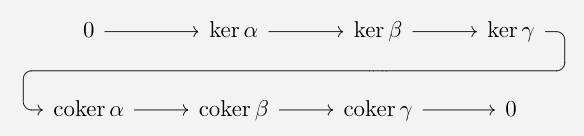

I ended my previous blog post by wrapping up the basics of covectors and \(k\)-forms on a manifold. To most, these concepts can be abstract and daunting since very little physical interpretation is provided. I'm hoping, however, that after a bit of discussion on integration theory, we'll be well-prepared to understand the physical interpretations provided in Riemannian manifolds.
That said, I mentioned the concepts of pullbacks and integration in my last post without really going into details. After hopelessly trying to write the mechanics of cohomology without these two tools, I realized that they are essential prerequisites and thus should be covered first.
The first thing I want to define (which I really should have put in the last blog post) is known as the exterior derivative. Recall that a differential \(1\)-form takes a vector field (which we can think of as some sort of flux) and assigns a real-valued scalar to it. Therefore, our \(1\)-forms can be thought of as tools which measure the flux across the boundary of a smooth manifold. The purpose of our exterior derivative is to sum the net flux over a two-dimensional set with respect to some \(1\)-form. As one may expect, this results in a map which takes \(1\)-forms to \(2\)-forms.
Formally, given a \(k\)-form \(\omega = \sum_{I}\alpha_I\,dx^I\), we define the exterior derivative to be the (\(k+1\))-form
$$ d\omega = \sum_{I} d\alpha_I \wedge dx^I $$
(recall from last time that our \(\alpha_I\) are real-valued functions on \(M\), so \(d\alpha_j = \sum \frac{\partial \alpha}{\partial x^i} dx^i\)).
Left: the form \(\omega = x\,dy\) over the vector field \(X = \partial y\), where blue corresponds to negative and red corresponds to positive Right: The form \(d\omega = dx \wedge dy\). Imagine the dots are simply vectors coming out of the screen.
For example, consider the vector field \(X = \partial y\) together with the \(1\)-from \(\omega = x\,dy\). For each vector in \(X\), \(\omega\) assigns some sort of value which we will picture as thickness. Given some open region, \(U\), we can think of our \(1\)-form as the amount of flux through the boundary. On the other hand, the exterior derivative \(d\omega = dx \wedge dy\) is measuring the net flux through the surface itself.
For those who have taken calculus (which I'm guessing is everyone reading this article, but anyone who hasn't and still made it this far — bien joué), a common term which you've probably heard is "anti-derivative". After learning a bit about the fundamental theorem of calculus and how integration on \(\mathbb{R}^n\) looks like differentiating backwards, this nomenclature begins to make sense. However, in differential geometry the term anti-derivative is entirely different than the notion introduced by calculus. Often in higher-level mathematics, the prefix "anti" indicates that reversing some property results in the negation of the original property. For example, we say that a binary operation \(\oplus\) over a set \(S\) is commutative if
$$ x \oplus y = y \oplus x$$
for all \(x, y \in S\), and anti-commutative if
$$
x \oplus y = - ( y \oplus x)
$$
Formally, given a graded algebra \(R = \bigoplus_{n=1}^\infty R_n\) over a field \(K\), mathematicians call a \(K\)-linear map \(D: R \to R\) a derivation if it satisfies:
for any \(\alpha \in R_k\) and \( \beta \in R_l\). We say that a derivation (resp. anti-derivation) \(D\) is of degree \(n\) if, for any \(\gamma \in R_m\), we have \(D(\gamma) \in R_{m + n}\) (that is, \(D\) increments the degree of our ring by \(n\)).
Hopefully the notation \(\bigoplus\) above didn't completely throw a wrench in things for you — the \(\oplus\) symbol simply represents whatever our abstracted binary operation is over our field \(K\). In our case, it is the wedge produce (\(\wedge\)), so you will often see me use \(\Omega^*(M) = \bigwedge_{k=1}^\infty \Omega^k(M)\) instead.
There will only be one anti-derivation we care about in this blog series and, as you may have guessed, it is the exterior derivative.
Before discussing my next topic, I want to go over a few important facts about the exterior derivative that will help us when it comes time for cohomology.
Lemma:
The exterior derivative \(d: \Omega^*(M) \to \Omega^*(M)\) is an anti-derivation of degree \(1\).
Proof:
We already know that, given a \(k\)-form \(\omega\), \(d\omega\) is a \((k+1)\)-form. Therefore, it suffices to show that
$$d(\alpha \wedge \beta) = (d\alpha)\wedge \beta + (-1)^{\text{deg}\,\alpha}\alpha \wedge (d\beta) $$
Let \(\alpha = f\,dx^I \in \Omega^k(M)\) and \(\beta = g\,dx^J \in \Omega^l(M)\) for some strictly-increasing indexing sets \(I\) and \(J\). Then
$$ \begin{align}
d(\alpha \wedge \beta) &= d(fg\,dx^I \wedge dx^J )
\\&= \sum \frac{\partial(fg)}{\partial x^i} dx^i \wedge dx^I \wedge dx^J
\\&= \sum \frac{\partial f}{\partial x^i}g dx^i \wedge dx^I \wedge dx^J + \sum f\frac{\partial g}{\partial x^i} dx^i \wedge dx^I \wedge dx^J
\\&= \sum \frac{\partial f}{\partial x^i} dx^i \wedge dx^I \wedge g\,dx^J + (-1)^k \sum f dx^I \wedge \frac{\partial g}{\partial x^i}\, dx^i \wedge dx^J
\\&= d\alpha \wedge \beta + (-1)^k \alpha \wedge d\beta
\end{align}
$$
$$\tag*{$\blacksquare$}$$
Theorem:
Given an (at least) \(C^2\) manifold \(M\), the exterior derivative satisfies \(d \circ d = 0\).
Proof:
Fix some \(k\)-form \(\omega = f\,dx^I \in \Omega^k(M)\). Then
$$ d^2 (\omega) = d\left( \sum_{i} \frac{\partial f}{\partial x^i} dx^i \wedge dx^I \right) = \sum_{j} \sum_{i} \frac{\partial^2 f}{\partial x^i \partial x^j} dx^j \wedge dx^i \wedge dx^I $$
Since \(M\) is \(C^2\) by hypothesis, Schwarz's Theorem tells us that, for each \(i, j\), we have \(\frac{\partial^2 f}{\partial x^i \partial x^j} = \frac{\partial^2 f}{\partial x^j \partial x^i}\). However, by anti-symmetry, we have that \(dx^i \wedge dx^j = -dx^j \wedge dx^i\). Since the double sum must iterate over all possible combinations of \(i\) and \(j\), we know that the tuples \( (i, j) \) and \( (j, i) \) will both occur and cancel each other out.
$$\tag*{$\blacksquare$}$$
Now that we have a good idea how differential forms behave on a manifolds, how do we translate a \(k\)-form on one manifold to another? In order to do something like that, we need what is called a pullback. Recall that given a map \(F: M \to N\) between manifolds and vector field \(X\) on \(T_pM\), we defined the pushforward \(F_*: TM \to TN\) pointwise by defining the map \(F_{*,p}: T_pM \to T_{F(p)}N \) to satisfy
$$ (F_{*, p}(X_p))f := X_p(f \circ F) $$
where \(f\) is any representative real-valued function on \(N\). We define the codifferential, or pullback, to be the dual to the pushforward. Given a map \(F: M \to N\) between manifolds and \(k\)-form \(\omega \in \Omega^k(N)\), we define the pullback \(F^*: \Omega^k(N) \to \Omega^k(M)\) pointwise by requiring the map \(F^*_p: A_k(T_{F(p)}N) \to A_k(T_pM)\) to satisfy
We're originally given a \(k\)-form on \(N\) which takes \(k\) tangent vectors in \(TN\) to \(\mathbb{R}\), so by using the properties of our pushforward we can allow input vectors to be on \(TM\) now instead of \(TN\)! Since this function takes \(k\) input vectors on \(TM\), is both \(k\)-linear and alternating (inherited from \(\omega\)), and outputs some scalar in \(\mathbb{R}\), it must be a \(k\)-form by definition. The reader can think of the pushforward as a composition of \(\omega\) with \(F_*\) — however, this doesn't entirely make sense due to the fact that the domains and codomains don't align ( \(F_*\) would need to map to \(k\)-copies of \(T_{F(p)}N\)).
Notice that the pullback actually swaps the original mapping order of our function. That is, given a function \(F:M \to N\) between manifolds, we have that \(F^*: T^*N \to T^*M\) is a map from the cotangent bundle of \(N\) to the tangent bundle of \(M\). For any category theorists, this makes the pullback operator \((^*)\) a contravariant functor from the category of manifolds to the category of alternating sections.
For example, suppose we have the function \(f: \mathbb{R}^2 \to \mathbb{R}^3\) defined by \(F(u, v) = (u, uv, u^2v^3)\) and \(1\)-form \(\omega = z\,dx + xy^2\,dy-x\,dz\). Then we can use \(F\) sort of like a change of variables from calculus:
Before moving onto orientations, boundaries, and integrals, I want to provide a helpful theorem regarding the pullback:
Theorem:
Let \(M\) and \(N\) be smooth manifolds, and let \(F: M \to N\) be smooth. Then \(F^*(d \omega) = dF^*(\omega)\) for any \(k\)-form \(\omega\).
Proof:
Let \(h \in C^\infty(M)\), \(p \in M\), and \(X_p \in T_pN\). Then, by definition
$$ \begin{align}
(F^*(dh))_p(X_p) &= F^*(dh)_{F(p)}(X_p)
\\&= (dh)_{F(p)}F_{*,p}(X_p)
\\&= (F_{*, p}(X_p))(h)
\\&= X_p(h \circ F)
\\&= d(h \circ F)(X_p)
\\&= d(F^*h)(X_p)
\end{align}
$$
By allowing \(p\) to vary over \(M\) and applying a smooth bump function, the same result must hold globally.
To extend the idea from real-valued functions on \(M\) to \(k\)-forms over \(M\), we simply note that the coefficients of a \(k\)-form are real-valued functions and apply the second to last line of the equality string above. That is, given a \(k\)-form \(\omega = \sum \alpha_I dx^I\), we wind up with
$$
\begin{align}
F^*d\omega &= F^*\left( \sum d\alpha_I \wedge dx^I \right)
\\&= \sum F^* d\alpha_I \wedge F^*dx^I
\\&= \sum d(\alpha_I \circ F) \wedge d(x^I \circ F)
\\&= dF^*\omega
\end{align}
$$
$$\tag*{$\blacksquare$}$$
Orientations, Boundaries, and Integrals
Now that we are caught up on derivations and pullbacks, the first thing I want to introduce is a fairly straightforward concept that is often taught in high school physics courses: orientation. Consider a traditional 12-hour analog clock — there are exactly two ways for the hour and minute hand to traverse the clock (i.e. clockwise and counter-clockwise). This should seem fairly obvious since \(S^1\) is a \(1\)-dimensional manifold and we know that there are only two directions in \(1\) dimension. So how many possible orientations are there in higher dimensions? As we will come to see, the answer is two as well!
Before expounding on the technicalities, the rationale for a shape of arbitrary dimension having only two orientations in higher dimensions is as follows: an orientation on an \((n+1)\)-dimensional object induces an orientation on any \(n\)-dimensional subcomponent. The easiest way for me to portray this is through simplical complexes:
Orientation on a 1-simplex, 2-simplex, and 3-simplex
Say we have a 1-simplex (which is just a line); when we choose some orientation on our line, any 2-simplex containing it must have two other lines. The orientation on the two other lines can either agree (shown in blue above) with our original line, or disagree (shown in red above) — if the orientation of all the lines agree, we have an orientation on our 2-simplex (i.e. triangle).
Things get a bit trickier when we define an orientation on our 3-simplex, however. Unlike before, every line is now contained in exactly two faces instead of one, so each line will have two directions respective to its two faces. For example, on the front face in our picture above, the bottom line is moving to the left. However, with respect to the bottom face, that same line needs to move to the right.
The construction for our orientation on the 3-simplex may seem a bit counter-intuitive; but — if you notice — it persists under rotation on any axis. Say we accidentally knock over our 3-simplex accidentally so that our right-most face is now the new bottom face. Despite the rotation, to orientations have changed!
"But hold on," you might say. "I remember the left-hand rule from physics, and there were no conflicting rotations." Yes — there were. The only orientation you really cared about (for the sake of, say, torque) was on the \(xy\)-plane, because your position and force vectors existed on that plane. However, that orientation on the \(xy\)-plane additionally induced an orientation on the \(xz\) and \(yz\)-planes. Depending on which way you took the cross-product, these two orientations told you the direction of your torque vector \(\tau\). For the record, this is why the order of your cross-product mattered, since it led to conflicting directions along the \(z\)-axis.
The orientations induced by the left-hand rule
Hopefully we understand by this point that any \(n\)-dimensional space can have only 2 possible orientations. But what is an orientation formally? It makes my job a little bit harder to tell you that an orientation is not what you'd expect. To motivate our definition further, recall that we were able to rotate our 2-simplex above without changing the orientation. On the standard basis for \( \mathbb{R}^3 \), rotation by \( 90^\circ\) in a given direction corresponds to permuting the standard basis \( \mathbf{e}_1, \mathbf{e}_2, \mathbf{e}_3\).
Given an \(n\)-dimensional vector space \(V\) and basis \((e_1, \dots, e_n)\), we can re-order order the elements of our basis in any way possible. For a vector space with one basis, we could simply define two equivalence classes based on signs of permutation. However, many vector spaces have more than one basis associated to them. For such vector spaces, each pair of bases \(a_1, \dots, a_n\) and \(b_1, \dots, b_n\) must have a transition matrix \([m_{ij}]\) connecting the two. Thus the only way to ideally split the collection of bases down the middle is by the sign of the determinant \( \det([m_{ij}]) \).
Formally, an orientation is an equivalence relation on the set of all bases for a vector space \(V\). Two elements (\(a_1, \dots, a_n\)) and (\(b_1, \dots, b_n \)) are equivalent if their transition matrix \([m_{ij}]\) has positive determinant.
So where do the manifolds come in? Well, for any point \(p \in M \), our tangent space \(T_pM\) has the nice property that its also a vector space! Thus, at each point \(p \in M\), we have an orientation \(\mu_p\) which globally gives us some function \(p \mapsto \mu_p\). A manifold \(M\) is said to be orientable if the map \(p \mapsto \mu_p\) is continuous.
Given a connected \(n\)-dimensional manifold \(M\) and continuous orientation \(\mu\), any locally constant orientation must be globally constant. Thus, our transition matricies cannot diminish to zero, so they must be nonsingular! Using this, we can define a nowhere-vanishing \(n\)-form by applying a \(C^\infty\)-bump function (a technical tool that I never explained) to local coordinates \(x^1, \dots, x^n\). I'm avoiding the proof because it is a bit more technical despite the fact that the general idea is quite simple. What mattes is that a manifold being orientable is equivalent to it having a top-dimensional differential form which is nowhere-vanishing. Just go with it (or don't).
Our next topic on the road to de Rham cohomology is the study of manifolds with boundary. Note that if every set in our manifold is homeomorphic to an open ball in Euclidean space, then there's no possible way for us to look over the edge of our manifold! We simply just keep getting infintismally closer and closer to the edge. Thus, our open sets must be homeomorphic to some structure other than the open sets in \(\mathbb{R}^n\) alone. To solve this issue, we define the half-open space \(\mathcal{H}^n\) to be the set \( \{ (x^1, \dots, x^n) \in \mathbb{R}^n \mid x^n \geq 0 \} \). In one dimension, \(\mathcal{H}^1 = [0, \infty)\), while in two dimensions, \(\mathcal{H}^2\) is the upper half plane:
\( \mathcal{H}^2\) and \( \mathcal{H}^3 \)
You may notice that the set \( [0, \infty) \) is not actually open in Euclidean space — so how can we define open sets containing all of our elements (in particular neighborhoods of 0)? Well the topological axioms from my first post state that the whole space \( [0, \infty) \) must be open. In addition, the axioms state that the intersection of open sets must also be open, so something like \( [0, \infty) \cap (-1, 1) = [0, 1) \) must be open as well. Therefore, given a topological space \((X, \tau)\) and subset \(Y \subset X\), we define the subspace topology on \(Y\) to be \( \{ U \cap Y \mid U \in \tau \} \). Therefore, since \( \mathcal{H}^n \subset \mathbb{R}^n \) for all \(n\) we must have that there is a subspace topology induced on \(\mathcal{H}^n\).
Much like a regular manifold, we define a manifold with boundary to be a Hausdorff, second-countable topological space. However, instead of possessing an atlas of charts homeomorphic to \(\mathbb{R}^n\), a manifold with boundary has an atlas of charts homeomorphic to \(\mathcal{H}^n\). Therefore, elements along the boundary of our manifold must translate onto some hyperplane with \(x^n = 0\).
Topologically, we define the boundary of a set \(U \subset X\) to be the set of all points \(p \in U\) such that every neighborhood of \(p\) contains a point in \(X - U\) and \(U\) simultaneously. That is, for any point \(p \in \partial U\), no matter how small of an open ball around \(p\) we take, it must contain both a point inside our set and outside our set.
A point along the boundary of \( \mathcal{H}^2 \)
The boundary of a set \(U\) is typically denoted \(\partial U\) (I will explain later why we use the notation for tangent vectors).
It should be clear that the boundary of \( \mathcal{H}^n \) is the set \( \partial \mathcal{H}^n = \{ (x^1, \dots, x^n)\mid x^n = 0\} \cong \mathbb{R}^{n-1} \). For example, notice that the boundary of \(\mathcal{H}^2\) (pictured above) is the \(x\)-axis, which is isomorphic to \(\mathbb{R}\). Similarly, the boundary of \(\mathcal{H}^3\) (pictured above) is simply the \(xy\)-plane, which is isomorphic to \(\mathbb{R}^2\).
Given an \(n\)-dimensional manifold \(M\), point \(p \in M\), and chart \( (U, \phi) \) containing \(p\), we say that a point \(p\) is a boundary point (denoted \(p \in \partial M\)) if \( \phi(p) \in \partial \mathcal{H}^n \).
Notice, however, that this would imply the boundary points map to \(\mathbb{R}^{n-1}\) (since it is homeomorphic to \(\partial \mathcal{H}^{n}\)). If we define a simple coordinate chart by \( (U, \phi|_{U \cap \partial M}) \), this would imply that \(\partial M\) is an \((n-1)\)-dimensional manifold without boundary (since it maps onto \(\mathbb{R}^{n-1}\) instead of \(\mathcal{H}^{n-1}\)). This will be an incredibly important concept later, but for the moment keep the fact that
$$ \partial \circ \partial = 0 $$
in the back of your head.
Our last topic before moving onto cohomology is the theory of integration. For any details of Riemannian integration, I'll refer the reader to Rudin's Principles of Mathematical Analysis chapters 6 and 10. The primary definition we care about is definition 10.11 which tells us that, given a \(k\)-form \( \omega = f(x) dx^{i_1} \wedge \dots dx^{i_k} \) over some open set \(U \subset \mathbb{R}^n\),
which is basically what you'd expect. We require that the indices be strictly increasing due to the fact that \(dx \wedge dy = - dy \wedge dx\). Going back to that whole "orientation-is-equivalent-to-top-dimensional-form" business, this is the logic that explains why choosing the wrong orientation on your domain of integration gives the wrong sign in vector calculus.
To define an integral on our manifold, we simply steal any existing structure from \(\mathbb{R}^n\) using our coordinate chart \( (U, \phi) \), just like we did for differentiation. However, we're not actually translating points on \(M\) to points on \(\mathbb{R}^n\), but instead differential forms. Therefore, we're going to need that pullback that I defined earlier. But wait a second — if \(\phi: U \to \mathbb{R}^n\) maps onto Euclidean space and our pullback is a contravariant functor, we're going the wrong direction! Hence, it's not actually \(\phi\) we care about, but \(\phi^{-1}\)! This way, \( (\phi^{-1})^*\) is a linear map which takes \(k\)-forms on our manifold to \(k\)-forms on Euclidean space (which we know how to integrate by the formula above). Formally, given a coordinate chart \( (U, \phi) \) and \(k \)-form \( \omega \), we defnie the integral of \(\omega\) over \(U\) to be
For example, consider the sphere \(S^2\). The sphere is a 2-dimensional manifold which can be represented by the coordinates \((\theta, \phi)\). For any coordinate neighborhood we choose, we have the chart \((\theta, \phi) \mapsto (x(\theta, \phi), y(\theta, \phi), z(\theta, \phi)) \) where
$$ \begin{align}
x(\theta, \phi) &= \sin \phi \cos \theta \\
y(\theta, \phi) &= \sin \phi \sin \theta \\
z(\theta, \phi) &= \cos \phi
\end{align}
$$
Suppose we want to find the integral of the \(1\)-form \(\omega = \sin^2 \phi \, d\theta\) over some given set \(U \subset S^2\). Given the coordinates \( (x, y, z) \) for \(\mathbb{R}^3\), we have that
$$ \begin{align}
\phi^*(dx) &= \cos \phi \cos \theta \,d\phi - \sin \phi \sin \theta \,d\theta \\
\phi^*(dy) &= \cos \phi \sin \theta \,d\phi + \sin \phi \cos \theta \,d\theta \\
\phi^*(dz) &= -\sin \phi \, d\phi
\end{align}
$$
I will omit the background calculations, as they only require elementary trigonometry; ultimately, we have
At this point, you may be thinking, "This is just the same mathematics that I learned in vector calculus — why do graduate students spend so much of their time with this?" I have two answers for this:
The sphere \(S^2\) is a pretty simple manifold to work with. For starters, it's differential properties are inherited from \(\mathbb{R}^3\) more so than normal manifolds due the fact that it's an embedding (note, however, that the Whitney embedding theorem states that every smooth \(n\)-manifold can be embedded in \(\mathbb{R}^{2n}\)). However, as one begins to resarch the more heuristic manifolds studied in academia, performing calculations is no longer as trivial.
The vast majority of vector calculus courses are not proof-based. Thus, instructors will often teach how to calculate the answer and nothing more.
The last thing I want to introduce in this section is Stokes' theorem:
Stokes' Theorem:
Let \(M\) be an oriented smooth \(n\)-dimensional manifold. For any smooth \((n-1)\)-form \(\omega\) with compact support,
$$ \int_M d\omega = \int_{\partial M} \omega$$
Proof:
Let \( \{\rho_\alpha \} \) be a partition of unity on \(M\).
For each \(\alpha\), our partition of unity is subordinate to some chart \( \{ U_\alpha \} \) so that \(\rho_\alpha \equiv 0\) outside \( U_\alpha\). There are two cases:
\(U_\alpha\) is a regular chart which maps to the interior of \(\mathcal{H}^n\)
\(U_\alpha\) is a boundary chart
Consider the first case where \(U_\alpha\) is a regular chart. Then we can represent \(\omega\) in terms of its components by
$$ \omega = \sum_{i=1}^n \omega^i \, dx^1 \wedge \dots \wedge \hat{dx^i} \wedge \dots \wedge dx^n $$
where the hat notation, \( \hat{dx^i} \), implies that particular index is removed. Then
$$ d \rho_\alpha \omega = \sum_{i=1}^n \frac{\partial \rho_\alpha \omega^i}{\partial x^i} dx^1 \wedge \dots \wedge dx^n $$
Evaluating the integral, this gives us
$$ \int_{U_\alpha} d(\rho_\alpha \omega) = \sum_{i=1}^n \int_{U_\alpha} \frac{\partial \rho_\alpha \omega^i}{\partial x^i} dx^1 \wedge \dots \wedge dx^n $$
However, the fundamental theorem of calculus tell us that that we must evaluate along the boundary points, which are all \(0\) since \(\rho_\alpha\) is not supported on the boundary of \(U_\alpha\)
Next consider the case that \(U_\alpha\) is a boundary chart. By Fubini's theorem, we are able to evaluate the expression
$$ \int_{U_\alpha} d(\rho_\alpha \omega)$$
along the bonudary as
$$ \begin{align}
\int_{U_\alpha} d(\rho_\alpha \omega) &= \sum_{i=1}^n \int_{U_\alpha} \frac{\partial \rho_\alpha \omega^i}{\partial x^i} dx^1 \wedge \dots \wedge dx^n \\
&= \sum_{i=1}^n \int_{\partial U_\alpha} \int_0^\infty \frac{\partial \rho_\alpha \omega^i}{\partial x^i}dx^i \, dx^1 \wedge \dots \wedge \hat{dx^i} \wedge \dots \wedge dx^n
\\&= \sum_{i=1}^n \int_{\partial U_\alpha} \rho_\alpha \omega^i x^i \, dx^1 \wedge \dots \wedge \hat{dx^i} \wedge \dots \wedge dx^n
\\&= \int_{\partial U_\alpha} \rho_\alpha \omega
\end{align}
$$
Ultimately, the orientation on \(\partial U_\alpha\) should satisfy the commuting of forms on the second line. Since \(\sum_{\alpha}\rho_\alpha = 1\), we have that
$$ \int_{\partial M} \omega = \int_{\partial M} (\sum_{\alpha}\rho_\alpha) \omega $$
Additionally, since \(\{ \rho_\alpha \}\) is also locally finite, linearity of the integral operator gives us
$$ \int_{\partial M} \omega = \int_{\partial M} (\sum_{\alpha}\rho_\alpha) \omega = \sum_{\alpha} \int_{\partial U_\alpha} \rho_\alpha \omega $$
$$\tag*{$\blacksquare$}$$
I'm aware that I never discussed partitions of unity (which is a bit of a crime considering how often they're used in the study of manifolds), but the idea is that we only have to look at the local properties inside a coordinate chart.
De Rham Cohomology
With Stokes' theorem in our inventory, we are now curious whether a given differential form is the boundary of another differential form. In my opinion, it is easier to address this first in terms of curves on a manifold.
Curves on the \(3\)-holed torus
Suppose we have some smooth manifold \(M\) and curve \(\gamma: [0, 1] \to M\). If we apply Stokes' theorem to solely the curve \(\gamma\), then
$$ \int_\gamma d\omega = \int_{\partial \gamma} f = f(\gamma(1)) - f(\gamma(0)) $$
for any \(0\)-form \(\omega = f(t)\). Thus, a line integral is independent of its path — this came to be known as the fundamental theorem of line integrals (also called the gradient theorem). This implies that, if there is no hole present, a closed curve has \(\int_\gamma d\omega = 0\). When a hole is present, however, we come upon topics in complex analysis like winding number which ensure \(f(\gamma(1)) \neq f(\gamma(0))\).
For example, consider the unit disk with a hole punctured in it:
Two curves on the punctured disk
Consider the differential form \( \omega_1 = \frac{-y}{x^2 + y^2} dx + \frac{x}{x^2 + y^2}dy \) — this form effectively allows us to measure change in the swept angle \(\theta\). For any closed curve not containing the origin, we have that \(\int_\gamma \omega_1 = 0\). However, a closed curve wrapped around the origin will have
$$
\int_\gamma \omega_1 = 2n\pi
$$
where \(n\) is called the winding number. Let me now introduce a few terms.
Formally, we say that a \(k\)-form \(\omega\) is closed if \(d\omega = 0\) and is exact is there exists some \((k-1)\)-form \(\tau\) such that \(\omega = d\tau\). In the example above, our differential form \(\omega_1\) is a closed form but not an exact form (the reader can check that there is no well-defined function \(\theta(x, y)\) on the punctured disk such that \(d\theta = \omega_1\)).
Let \(Z^k(M)\) denote the set of all closed \(k\)-forms on \(M\) and \(B^k(M)\) denote the set of all exact \(k\)-forms on \(M\). From the first theorem in the first section, we have that \(d \circ d = 0\) so every exact form must also be closed. Hence, \(B^k(M) \subset Z^k(M)\) for all \(0 \leq k \leq n\). You will sometimes see\(B^k(M)\) denoted as the set of "boundaries" and \(Z^k(M)\) denoted as the set of "cycles".
In the theory of classical mechanics, suppose we have some \(1\)-form \(\alpha = f(x, y)\,dx + g(x, y)dy\). Then
$$ \begin{align}
d\alpha &= \frac{\partial f}{\partial x} dx \wedge dx + \frac{\partial f}{\partial y} dy \wedge dx + \frac{\partial g}{\partial x} dx \wedge dy + \frac{\partial g}{\partial y} dy \wedge dy
\\&= \left( \frac{\partial g}{\partial x} - \frac{\partial f}{\partial y} \right) dx \wedge dy
\end{align}
$$
Therefore, if \(\alpha\) is closed, then \( \frac{\partial g}{\partial x} = \frac{\partial f}{\partial y} \). Similarly, if \(\alpha\) is exact, then there exists some smooth function \(h(x, y): \mathbb{R}^2 \to \mathbb{R}\) such that \(\alpha = dh = \frac{\partial h}{\partial x}dx + \frac{\partial h}{\partial y}dy \). Moreover, since exact forms are closed, this would imply that
$$
\frac{\partial^2 h}{\partial x \partial y} = \frac{\partial^2 h}{\partial y \partial x}
$$
Therefore, Schwarz's theorem on the symmetry of second derivatives is equivalent to a \(1\)-form being exact!
We define the de Rham Cohomology group of degree \(k\) to be the equivalence class
Where \(d^r\) is simply the restriction of the map \(d\) to \(r\)-forms. The elements of \(H_{dR}^k(M)\) are the equivalence classes \( [\omega] \) defined by the relation
It is common to write \(H_{dR}^k(M) = 0\) (or the \(k^{\textrm{th}}\) cohomology group is trivial ) whenever \( Z^k(M) = B^k(M) \). Note that for any manifold \(M\), there are no exact \(0\)-forms (since there is not such thing as a \(-1\)-form) — therefore \(H_{dR}^0(M) = Z^0(M)\). Similarly, for any \(n\)-dimensional manifold, \(H_{dR}^k(M) = 0\) for all \(k > n\). This is due to the fact that, given some \(n\) form \(\omega\), \(\omega\) must have the representation
However, the covector \(dx^i\) is already included in the wedge product \(dx^1 \wedge \dots \wedge dx^n\), which means it must cancel out and evaluate to \(0\). Therefore, there cannot exist any \((n+1)\)-forms besides the zero form, so \(Z_{dR}^{n+1}(M) = \{ 0 \} = B_{dR}^{n+1}(M)\). The same logic applies to higher dimensions.
A common example for beginners is to find the cohomology group \(H_{dR}^1(S^1)\). Since there are no higher dimensional forms,
$$Z^1(S^1) = \Omega^1(S^1) = \{ f(t)\,dt |\ f \in C^\infty(S^1) \}$$
I'll go ahead and introduce a helpful lemma to make this easier:
Lemma:
Let \(M\) is a connected, orientable \(n\)-manifold without boundary and \(\omega\) an \(n\)-form. If \(\omega\) is exact, then \(\int_M \omega = 0\).
Proof:
Suppose that \(\omega\) is exact. Then \(\omega = d\tau\) for some \((n-1)\)-form \(\tau\). By Stokes' theorem,
$$ \int_M \omega = \int_M d\tau = \int_{\partial M} \tau = 0 $$
since \(M\) has no boundary.
$$\tag*{$\blacksquare$}$$
Since our circle is a connected, orientable \(1\)-manifold without boundary, the lemma above tells us that
since \(\frac{1}{2\pi}\int_{S^1} \sigma\) can take any value in \(\mathbb{R}\) for non-exact \(1\)-froms \(\sigma\). Utilizing the two other facts that I provided prior to this example, we holistically have
$$ H_{dR}^k(S^1) = \begin{cases}
\mathbb{R} & k = 0 \\
\mathbb{R} & k = 1 \\
0 & k \geq 0
\end{cases}
$$
There will be a much easier way to compute this when I make it to the Mayer-Vietoris sequence. For the moment, however, it's worth building up some structure on our cohomology groups. Consider the following lemma:
Lemma:
Let \(F: M \to N\) be a smooth map between manifolds. Then the pullback \(F^*: \Omega^*(N) \to \Omega^*(M)\) preserves closed and exact forms.
Proof:
Recall from the second theorem in the first section that the exterior derivative \(d\) commutes with the pullback. If \(\omega\) is closed, then
$$ dF^*\omega = F^*d\omega = F^*0 = 0 $$
Similarly, if \(\omega\) is exact, then
$$ F^*\omega = F^*d\tau = d F^*\tau $$
where \(\omega = d\tau\).
$$\tag*{$\blacksquare$}$$
Therefore, using a smooth map between manifolds, we can translate cohomology classes from one manifold to another! Given a smooth map between manifolds \(F: M \to N\), we define the cohomology pullback map \( F^\# : H_{dR}^k(N) \to H_{dR}^k(M) \) by \( [\omega] \mapsto [ F^*\omega ] \). The lemma above tells us that this map preserves cohomology types. But how well-structured is \(H_{dR}^k(M)\) algebraically? Well, according to this next theorem, if you think about the wedge product as multiplication then it gives us a graded ring:
Theorem:
Given an \(n\)-dimensional manifold \(M\), \(H_{dR}^*(M) = \bigoplus_{k=0}^n H_{dR}^k(M)\) forms a ring.
Proof:
We know that addition of forms is an abelian group. Thus, it suffices to show that the wedge product between cohomology classes \( \wedge : H^k(M) \times H^l(M) \to H^{k + l}(M) \) induces a graded structure that preserves integral cohomology.
First, suppose \(k, l \geq 0\) and assume that \(\omega \in \Omega^k(M)\) and \(\tau \in \Omega^l(M)\) are closed. Then our first lemma tells us that
$$ d(\omega \wedge \tau) = d\omega \wedge \tau + (-1)^k \omega \wedge d\tau = 0 \wedge \tau + (-1)^k \omega \wedge 0 = 0 $$
Therefore, \(\omega \wedge \tau\) is closed as well.
Next, suppose \(\omega\) is closed and \(\tau\) is exact. Then there exists some \((l-1)\)-form \(\sigma\) such that \(\tau = d\sigma\). Therefore,
$$ d(\omega \wedge \sigma) = d\omega \wedge \sigma + (-1)^k \omega \wedge d\sigma = (-1)^k \omega \wedge \tau $$
so
$$ d((-1)^k \omega \wedge \sigma) = \omega \wedge \tau $$
Therefore, \(\omega \wedge \tau\) is exact. A similar result shows that the same result holds if we assume \(\omega\) is exact and \(\tau\) is closed.
Ultimately, the wedge product preserves integral cohomology classes. Much as the constant unit function \(x \mapsto 1\) is a multiplicative identity for the wedge product between forms, \( [x \mapsto 1] \) is the multiplicative identity for the wedge product between cohomology classes (note that the constant unit function is closed, and thus sends closed forms to closed forms and exact forms to exact forms). Since the wedge product is distributive, \( (H^*(M), +, \wedge )\) is a ring.
$$\tag*{$\blacksquare$}$$
You will sometimes see the wedge produce between cohomology classes called the cup product, denoted by \([\omega] \smile [\tau] = [\omega \wedge \tau]\). The notation is whichever you prefer, but preserving the wedge symbol seems a little more intuitive to me.
The last set of material (which may be a bit lengthy) that I want to introduce starts off with something called cochain complexes (I know I said you wouldn't have to worry about category theory, but look how far you've come). Let \( \mathcal{C} = \{C^k, d^k \}_{k \in \mathbb{Z}} \) be a collection of objects \(C^k\) and morphisms \(d_k: C^k \to C^{k+1}\) in an abelian category \(\mathcal{A}\). If \(d_k \circ d_{k-1} = 0\), then we call
a cochain complex. The elements \(c \in C^k\) are often referred to as \(k\)-cochains.
Recall that the kernel of a function \(f : X \to Y\) is the set \(\ker f = \{ x \in X | f(x) = 0 \}\) and its image is \(\IM f = \{ f(x) | x \in X \}\). Given \(i \in \mathbb{Z}\) and \(j > i + 1\), we say that a sequence of morphisms
is exact if \( \IM d_{k} = \ker d_{k+1} \) for all \(i \leq k \leq j-1\).
To get you all nice and warmed up to the new kind of mathematics we'll be doing the remainder of this blog post (commonly known as "diagram chasing"), I'll start off with an easy lemma:
Lemma:
A linear morphism \(d: A \to B\) between objects in an abelian category is an isomorphism if and only if we have the following exact sequence:
$$ 0 \rightarrow A \xrightarrow{d} B \rightarrow 0 $$
Proof:
Since \(d: A \to B\) is linear, a one-to-one correspondence is equivalent to \( \ker d = 0 \). Then, for any exact sequence containing \(C \xrightarrow{d'} A \xrightarrow{d} B\), we must have \(\IM d' = \ker d = 0\) so it must be the case that \(C = 0\).
In a similar fashion, \(d\) is surjective if and only if \(\IM d = B\). Then, for any exact sequence containing \(A \rightarrow B \xrightarrow{d''} D\), we must have that \(\ker d'' = \IM d = B\). Thus, every element of \(B\) maps to the identity so \(D = 0\) as well.
$$\tag*{$\blacksquare$}$$
Let me now introduce a new definition which many readers may have not seen before (unless you study algebra) - the cokernel. Given a morphism \(f: A \to B\), we define the cokernel of \(f\), denoted \(\text{coker}\, f\), to be
$$ \text{coker}\, f := B / \IM (A) $$
elements of \(\text{coker}\,f\) are equivalence classes \([b]\) defined by the relation
$$ b \sim b' \Leftrightarrow \exists a \in A,\ b = b' + f(a)$$
This brings us to another helpful lemma:
Lemma:
If \( A \xrightarrow{f} B \xrightarrow{g} C \rightarrow 0 \) is an exact sequence, where \(f\) and \(g\) are linear morphisms, then there is a linear isomorphism \(C \cong \text{coker}\,f\)
Proof:
Assume \( A \xrightarrow{f} B \rightarrow C \rightarrow 0 \) is exact. Let \(i: C \to 0\) denote the zero map. Since \(g\) is linear, the first isomorphism theorem tells us that
$$ \frac{B}{\ker g} \cong g(B) $$
Since the sequence is exact, \(\IM g = \ker i = C\) so \(g(B) = C\). Similarly, \(\text{Im} f = \ker{g}\), so the equation above simplifies to:
$$ \frac{B}{\ker g} = \frac{B}{\text{Im} f} \cong g(B) = C $$
$$\tag*{$\blacksquare$}$$
We say that a \(k\)-cochain \(c \in C^k\) is a \( \underline{k}\)-cocycle if \(d_k(c) = 0\) and is a \(\underline{k}\)-coboundary if there exists some \(b \in C^{k-1}\) such that \( d_{k-1}(b) = c\). We often deonte the set of \(k\)-cocycles as \(Z^k(\mathcal{C}) = \ker d_k\) and the set of \(k\)-coboundaries as \(B^k(\mathcal{C}) = \IM d_{k-1}\).
See where this is going..?
We define the cohomology class degree \(k\) of \(\mathcal{C}\) to be the quotient space
$$
H^k(\mathcal{C}) := Z^k(\mathcal{C}) / B^k(\mathcal{C})
$$
We didn't really need an extra level of generality here (that is, you could probably prove the snake lemma specifically for de Rham cohomology). However, I think that the generalization of cohomology makes the proofs much more elegant since they now apply to simplical cohomology, singular cohomology, etc.
But what happens when we have two cochain complexes, say \(\mathcal{A} = \{ A^k, d_k\}\) and \(\mathcal{B} = \{ B_k, d'_k \}\), and want to relate the two? Well, as long as the morphisms in each step commute with our differentials \(d\) and \(d'\), we can produce a cochain map! Formally, we define a cochain map \(\Phi : \mathcal{A} \to \mathcal{B}\) to be a collection of linear morphisms \(\{ \phi_k : A^k \to B^k \}\) such that \( \phi \) commutes (i.e. \( \phi_{k+1} \circ d_k = d'_k \circ \phi_k\))
Note that we require our morphisms \(\phi_k : A^k \to B^k\) to be linear so that the induced map \( \Phi_k^*: H^k(\mathcal{A}) \to H^k(\mathcal{B})\) defined by \( [a] \mapsto [\phi_k a] \) is well-defined. To show that \(\Phi^*\) is well-defined, it suffices to show that \(\Phi\) maps cocycles to cocycles and coboundaries to coboundaries. For the first, note that if \(a \in Z^k(\mathcal{A})\), then \(d_k a = 0\). Since we require each \(\phi_k\) to be linear and the diagram to commute, this gives us \(d'(\phi_k(a)) = \phi_{k+1}(d_k(a)) = \phi_{k+1}(0) = 0\)
\(\Phi\) automatically maps coboundaries to coboundaries since our differentials commute (i.e. \(\phi_{k+1}(d_k a) = d_k'(\phi( a))\) ). Linearity is not required for this property.
You may ask yourself, "Where will I ever need a cochain map? The only chain complex I know of is the de Rham complex." Fortunately, that is all you need to know! Since each manifold produces its own de Rham complex, functions between manifolds give us cochain maps! Suppose \(M\) and \(N\) are smooth manifolds, and \(F: M \to N\) is smooth. Then \(F^\#: H_{dR}^*(N) \to H_{dR}^*(M) \) is our cochain map where each linear morphism is our pullback \(F^* : \Omega^*(N) \to \Omega^*(M)\) restricted to \(k\)-forms.
It turns out that we can create sequences of cochain maps as well! If you think about it, this is kind of like a \(2\)-dimesnional cochain complex 😳
"Why are these useful?", you might ask. Turns out that there is a particular sequence of cochain maps that is exceptionally important in defining the Mayer-Vietoris sequence.
Formally, let \(\mathcal{A}\), \(\mathcal{B}\), and \(\mathcal{C}\) be cochain complexes, and let \(i : \mathcal{A} \to \mathcal{B}\) and \(j: \mathcal{B} \to \mathcal{C}\) be cochain complexes. If
$$ 0 \rightarrow A^k \xrightarrow{i_k} B^k \xrightarrow{j_k} C^k \rightarrow 0 $$
a short exact sequence. It's now time for me to introduce an incredibly important lemma (which really should be more of a theorem but its main use is to make the proof of Mayer-Vietoris more straightforward, so who knows).
The Zig-Zag Lemma:
If
$$ 0 \rightarrow \mathcal{A} \rightarrow \mathcal{B} \rightarrow \mathcal{C} \rightarrow 0 $$
is a short exact sequence and each differential morphism is linear, then there is a long exact sequence
Proof:
We will use \(d\) for the linear differential in each of \(\mathcal{A}\), \(\mathcal{B}\), and \(\mathcal{C}\) to reduce overbearing notation. Let \(i\) denote the cochain map \(\mathcal{A} \to \mathcal{B}\) and \(j\) denote the cochain map \(\mathcal{B} \to \mathcal{C}\). Since each
$$ 0 \rightarrow A^k \xrightarrow{i_k} B^k \xrightarrow{j_k} C^k \rightarrow 0 $$
is exact, we have that \(\IM j_k = \ker (C^k \to 0) = C^k\) so \(j_k\) is surjective for each \(k\). Similarly, since \( \ker i_k = \IM (0 \to A^k) = 0\), the map \(i_k\) is injective for each \(k\).
We will first construct the map \(d^*: H^k(\mathcal{C}) \to H^{k+1}(\mathcal{A})\). Fix \(k \in \mathbb{Z}\) and suppose \(c \in Z^k(\mathcal{C})\). Using the fact that \(j_k\) is surjective, there must exist some \(b \in B^k\) such that \( c = j_k(b) \). Moreover, since \(c\) is a cocycle, \(d_k c = 0\). Since our maps \(i\) and \(j\) are cochain maps, commutativity of \(i_k\) and \(j_k\) give us
$$ j_{k+1}(d_k b) = d_k(j_k b) = d_k c = 0 $$
which implies that \(d_k b \in \ker j_{k+1} \). But \(\text{Im} \, i_{k+1} = \ker j_{k+1}\), so there must exist some \(a \in A^k\) such that \(d_k b = i_{k+1}(a)\). Using the fact that cochain maps commute and \(d \circ d = 0\), we have
$$ \begin{align}
i_{k+2} (d_{k+1} a) &= d_{k+1}(i_{k+1} a)
\\&= d_{k+1}(d_k b)
\\&= 0
\end{align}
$$
Since \(i_{k+2}\) is injective, it must be the case that \(d_{k+1} a = 0\), so \(a\) is a cocycle (this tells us that \([a] \in H^{k+1}(\mathcal{A})\) is well-defined). Thus, we define the map \(d^*: H^k(\mathcal{C}) \to H^{k+1}(\mathcal{A}) \) by \(d^*[c] = [a]\).
$$
\require{AMScd}
\begin{CD}
a \in A^{k+1} @>{i_{k+1}}>> d_kb \in B^{k+1} @. \\
@. @A{d_k}AA @. \\
@. b \in B^k @>{j_k}>> c \in C^k
\end{CD}
$$
We next wish to prove that \(d^*\) is well-defined. Again, let \(c\) be a cocycle and let \(a \in A^{k+1}\) be the cochain mapped to in the construction above. Suppose that \(b, b' \in B^k\) (the object \(B^k\), not the set of coboundaries \(B^k(\mathcal{B})\)) and \(j_k(b) = c = j_k(b')\). Since cochain maps are required to be linear morphisms, we must have that \(j_k(b - b') = c - c = 0\) so \(b - b' \in \ker j_k\). By exactness, \(\IM i_k = \ker j_k\) so there exists some \(a' \in A_k\) such that \(b - b' = i_k a'\). Then by lineariry of our cochain map \(i\), linearity of \(d\), and exactness of each sequence,
$$ \begin{align}
i_{k+1}(a - d_k a') &= i_{k+1}(a) - i_{k+1}(d_k a)
\\&= i_{k+1}(a) - d_k(i_k a)
\\&= d_k b - d_k(b - b')
\\&= d_k b - d_k b + d_k b'
\\&= d_k b'
\end{align}
$$
so \(d^*\) is independent of lifiting under \(j_k\). Therefore, we have
$$ \dots \rightarrow H^{k-1}(\mathcal{C}) \xrightarrow{d^*} H^k(\mathcal{A}) \xrightarrow{i^*} H^k(\mathcal{B}) \xrightarrow{j^*} H^k(\mathcal{C}) \xrightarrow{d^*} H^{k+1}(\mathcal{A}) \rightarrow \dots $$
It remains to prove that this sequence is exact.
Since we already have exactness at every other link in the chain, it suffices to show \(\IM j^* = \ker d^*\) and \(\IM d^* = \ker i^*\). Note that, given two morphisms \(f: X \to Y\) and \(g: Y \to Z\), the statement \(\IM f = \ker g\) is equivalent to \(g \circ f = 0\). Therefore, we will use this fact to prove both equalities.
For the first equality, we wish to show that \(d^* \circ j^* = 0\). Fix some \([b] \in H^k(\mathcal{B})\). Then, by definition, every representative \(b' \in [b]\) must be a cocycle (i.e. \(d_k b' = 0\)). Now we have that \(j^*[b] = [j_k(b')] \), so by construction of \(d^*\) this gives us the following map:
$$
\require{AMScd}
\begin{CD}
a \in A^{k+1} @>{i_{k+1}}>> d_kb = 0 @. \\
@. @A{d_k}AA @. \\
@. b' \in B^k @>{j_k}>> j_k(b) \in C^k
\end{CD}
$$
Since we proved earlier that \(i_{k+1}\) is injective, it must be the case that \(a = 0\) for every representative \(b' \in [b]\). Therefore \(d^*(j^*[b]) = d^*[j_k(b')] = [a] = [0]\). Since \([b] \in H^k(\mathcal{B})\) was arbitrary, it must be the case that \(d^* \circ j^* = 0\).
For the second equality, we wish to show that \(i^* \circ d^* = 0\). Fix some \([c] \in H^k(\mathcal{C})\). Then for any representative \(c' \in [c]\), our construction of \(d^*\) gives us
$$
\require{AMScd}
\begin{CD}
a \in A^{k+1} @>{i_{k+1}}>> d_kb \in B^{k+1} @. \\
@. @A{d_k}AA @. \\
@. b \in B^k @>{j_k}>> c' \in C^k
\end{CD}
$$
By definition of \(i^*\), we have that
$$ \begin{align}
i^*(d^*[c]) &= i^*[a]
\\&= [i_{k+1}(a)]
\\&= [d_kb]
\\&= [0]
\end{align}
$$
where the last line follows from the fact that \([0]\) is the collection of coboundaries and \(d_kb\) is obviously a coboundary. Since \([c] \in H^k(\mathcal{C})\) was arbitrary, we have that \(i^* \circ d^* = 0\).
$$\tag*{$\blacksquare$}$$
It should be relatively clear from the cohomology diagram why the lemma is named the way it is. This next lemma isn't actually necessary for me to explain the Mayer-Vietoris sequence, but I figure I may as well provide it for fun:
The snake lemma, more commonly known (to me) as the no step on snek lemma
The Snake Lemma:
A commutative diagram with linear morphisms \(\alpha, \beta, \gamma\) and exact rows
$$ \require{AMScd}
\begin{CD}
0 @>>> A^1 @>{i_1}>> B^1 @>{j_1}>> C^1 @>>> 0 \\
@. @A{\alpha}AA @A{\beta}AA @A{\gamma}AA @. \\
0 @>>> A^0 @>{i_0}>> B^0 @>{j_0}>> C^0 @>>> 0
\end{CD}
$$
induces a long exact sequence

Proof:
We first wish to construct our four morphisms \(i^*, j^*, k^*\), and \(h^*\). From there, we will construct a connecting morphism \(\delta^*\) prove exactness at each step.
We simply define the map \(i^* : \ker \alpha \to \ker \beta\) by \(i_0 |_{\ker \alpha}\) and \(j^*:\ker \beta \to \ker \gamma\) by \(j_0 |_{\ker \beta}\). To see that \(i^*\) is well-defined, fix \(s \in \ker \alpha\). Then \(\alpha(s) = 0\). Since \(i_1\) is linear by hypothesis, we have that \(i_1(\alpha(s)) = 0\). By commutativity of our diagram,
$$ \beta(i_0(s)) = i_1(\alpha(s)) = 0 $$
so \(i_0(s) \in \ker \beta\) as desired.
$$ \require{AMScd}
\begin{CD}
0 @>{i_1}>> 0 \\
@A{\alpha}AA @A{\beta}AA \\
s @>{i_0}>> i_0(s)
\end{CD}
$$
The proof showing that \(j^*\) is well-defined is similar and therefore omitted.
Next, we define the map \(k^*: \coker \alpha \to \coker \beta\) by \([a] \mapsto [i_1(a)]\) and \(h^*: \coker \beta \to \coker \gamma\) by \([b] \mapsto [j_1(b)]\). To see that \(k^*\) is well defined, fix some \([a] \in \coker \alpha\) and representative \(a' \in [a]\). Since \(i_1\) is linear by hypothesis,
$$ \begin{align}
i_1(a) &= i_1(a_1 + \alpha(a_0))
\\&= i_1(a_1) + i_1(\alpha(a_0))
\\&= i_1(a_1) + \beta(i_0(a_0))
\end{align}
$$
where the last line follows from commutativity of the diagram. Since \(i_1(a_1) \in B^1\) and \(\beta(i_0(a_0)) \in \IM \beta \subset B^1\), the class \( [i_1(a)] \) is well-defined. The proof showing that \(h^*\) is well-defined is similar and therefore omitted.
We next define our connecting morphism \(\delta^*\: \ker \gamma \to \coker \alpha\). Fix some \(c \in \ker \gamma\). Then \(\gamma(c) = 0\). From the previous proof, we know that exactness implies \(j_0\) is surjective. Therefore, there exists some \(b \in B^0\) such that \(j_0(b) = c\). By commutativity, we have that
$$ j_1(\beta(b)) = \gamma(j_0(b)) = \gamma(c) = 0 $$
so \(\beta(b) \in \ker j_1\). However, exactness tells us that \(\IM i_1 = \ker j_1\) so there exists some \(a \in A^1\) such that \(i_1(a) = \beta(b)\). Thus, we define \(\delta^*: \ker \gamma \to \coker \alpha\) by \(\delta^* c = [a] = a \mod \IM \alpha\).
$$ \require{AMScd}
\begin{CD}
a @>{i_1}>> \beta(b) @>{j_1}>> 0 \\
@. @A{\beta}AA @A{\gamma}AA \\
@. b @>{j_0}>> c
\end{CD}
$$
In order to show that this is well defined, we must show that \([a]\) is independent of lifting under \(j_0\). Using the same variables from the diagram above, suppose there is a second \(b' \in B^0\) such that \(j_0(b) = c = j_0(b')\). By linearity of our cochain maps,
$$ j_0(b - b') = c - c = 0 $$
so \(b - b' \in \ker j_0\). But \(IM i_0 = \ker j_0\) so there exists some \(a_0 \in A^0\) such that \(i_0(a_0) = b - b'\). Let us next consider \( a - \alpha(a_0)\), which by definition of \([a]\) is equivalent to \(a\). Then linearity of our cochain map and \(\beta\) give us
$$ \begin{align}
i_1(a - \alpha(a_0)) &= i_1(a) - i_1(\alpha(a_0))
\\&= i_1(a) - \beta(i_0(a'))
\\&= \beta(b) - \beta(b - b')
\\&= \beta(b')
\end{align}
$$
Therefore, \(\delta^*\) is independent of lifting under \(j_0\).
It remains to show exactness at each step. However, we already know that \( \IM i^* = \ker j^*\) since \(j_0 \circ i_0 = 0\) by hypothesis. Therefore, we first show that \(\IM j^* = \ker \delta^*\).
For forward inclusion, fix \(c \in \IM j^*\). Then there exists some \(b \in \ker \beta\) such that \(j^* b = j_0(b) = c\). However, since \(i_1\) is injective (by exactness), it must be the case that \(i_1(0) = 0 = \beta(b)\). By our construction of \(\delta^*\), this gives us \(\delta^* c = [0]\)
$$ \require{AMScd}
\begin{CD}
0 @>{i_1}>> 0 @. \\
@. @A{\beta}AA @. \\
@. b @>{j_0}>> c
\end{CD}
$$
For reverse inclusion, fix \(c \in \ker \delta^*\). By our construction of \(\delta^*\), there must exist some \(b \in B^0\) with \(j_0(b) = c\) and \(a \in A^1\) with \(i_1(a) = \beta(b)\), ultimately giving us our original diagram
$$ \require{AMScd}
\begin{CD}
a @>{i_1}>> \beta(b) @. \\
@. @A{\beta}AA @. \\
@. b @>{j_0}>> c
\end{CD}
$$
Now, since \(c \in \ker \delta^*\), it must be the case that \([a] = [0]\) so \(a \in \IM \alpha\). Then there exists some \(a_0 \in A^0\) such that \(\alpha(a_0) = a\). By commutativity, we have that
$$ i_1(a) = i_1(\alpha(a_0)) = \beta(i_0(a_0)) $$
so
$$
\begin{align}
\beta(b - i_0(a_0)) &= \beta(b) - \beta(i_0(a_0))
\\&= \beta(b) - i_1(a)
\\&= \beta(b) - \beta(b)
\\&= 0
\end{align}
$$
Therefore, \(b - i_0(a_0) \in \ker \beta\). Since our rows are exact by hypothesis, \(j_0 \circ i_0 = 0\). This tells us that
$$ j_0 (b - i_0(a_0)) = j_0(b) - j_0(i_0(a_0)) = j_0(b) = c $$
Since \(\delta^*\) was shown to be independent of lifting under \(j_0\), this tells us that \(c \in \IM j^*\).
We next prove that \(\IM \delta^* = \ker k^*\). For forward inclusion, fix some \([a] \in \IM \delta^*\). Then there exists some \(c \in \ker \gamma\) with \(\delta^* c = [a]\). Pick some representative \(a' \in [a]\) to satisfy the following diagram:
$$ \require{AMScd}
\begin{CD}
a @>{i_1}>> \beta(b) @>{j_1}>> 0 \\
@. @A{\beta}AA @A{\gamma}AA \\
@. b @>{j_0}>> c
\end{CD}
$$
By our construction of \(k^*\), this gives us
$$ k^*[a] = k^*[a'] = [i_1(a')] = [\beta(b)] = [0] $$
For reverse inclusion, fix some \( [a] \in \ker k^* \) and choose a representative \(a' \in [a]\). Then we have \(k^*[a] = k^*[a'] = [i_1(a')] = [0]\). Thus, \(i_1(a') \in \IM \beta\) so there exists some \(b' \in B^0\) with \(\beta(b') = i_1(a')\). Consider \(c = j_0(b')\). By commutativity and exactness of our rows, we have
$$ \begin{align}
\gamma(c) &= \gamma(j_0(b'))
\\&= j_1(\beta(b))
\\&= j_1(i_1(a))
\\&= 0
\end{align}
$$
so \(c \in \ker \gamma\), and \(\delta^*[c] = [a'] = [a]\) by our construction of \(\delta^*\).
$$ \require{AMScd}
\begin{CD}
a' @>{i_1}>> \beta(b') @>{j_1}>> 0 \\
@. @A{\beta}AA @A{\gamma}AA \\
@. b' @>{j_0}>> c
\end{CD}
$$
It remains to prove that \(\IM k^* = \ker h^*\). For forward inclusion, fix \([b] \in \IM k^*\). Then there exists some \([a] \in \coker \alpha\) with \(k^*[a] = [b]\). Choose some representative \(a' \in [a]\). By construction of \(k^*\), we have that \([b] = [i_1(a')]\). Take \(b' = i_1(a')\). By definition of \(h^*\), we have that
$$ \begin{align}
h^*[b] &= h^*[b']
\\&= [j_1(b')]
\\&= [j_1(i_1(a'))]
\\&= [0]
\end{align}
$$
where the last line follows from exactness.
For reverse inclusion, fix some \([b] \in \ker h^*\). Then for any representative \(b_1 \in [b]\), we have that
$$ h^*[b] = h^*[b_1] = [j_1(b_1)] = [0] $$
This implies that \(j_1(b_1) \in \IM \gamma\), so there must exist an additional \(c_0 \in C^0\) such that \(\gamma(c_0) = c_1 = j_1(b_1)\). Since \(j_0\) is surjective (by exactness), there exists some \(b_0 \in B^0\) such that \(j_0(b_0) = c_0\). Therefore, commutativity of our diagram tells us that
$$ c_1 = \gamma(j_0(b_0)) = j_1(\beta(b_0)) $$
$$ \require{AMScd}
\begin{CD}
b_1 @>{j_1}>> c_1 \\
@. @A{\gamma}AA \\
b_0 @>{j_0}>> c_0
\end{CD}
$$
but then
$$\begin{align}
j_1(b_1 - \beta(b_0)) &= j_1(b_1) - j_1(\beta(b_0))
\\&= j_1(b_1) - \gamma(j_0(b_0))
\\&= j_1(b_1) - \gamma(c_0)
\\&= 0
\end{align}
$$
so \(b_1 - \beta(b_0) \in \ker j_1\). By exactness, we know that \(\IM i_1 = \ker j_1\) so there must exist some \(a_1 \in A^1\) with \(i_1(a_1) = b_1 - \beta(b_0)\). Then, by definition of \(k^*\), this gives us
$$ k^*[a] = [i_1(a)] = [b_1 - \beta(b_0)] = [b_1] = [b] $$
so \([b] \in \IM k^*\) as desired.
$$\tag*{$\blacksquare$}$$
LONG. H*CKIN. PROOFS.
But the feeling one gets after proving a long theorem such as this is like crack to grad students, so I couldn't bear to not include the proof.
I know, you must be upset that I broke my word and threw a little category theory / homological algebra in there — it puts hair on your chest. Anyways, we can step down a level of generality or two and retrace our steps back to de Rhram cohomology (which is still pretty damn abstract, but an improvement from where we just were). Notice that our exterior derivative \(d: \Omega^*(M) \to \Omega^*(M)\) satisfies all the properties required in cochain complexes (which is basically just linearity and commutativity with pullbacks), so we don't really need to check hypotheses when it comes to using the zig-zag lemma or snake lemma.
So how do we apply what we just learned to manifolds 🧐? Sure, we could somehow find the pullback of smooth mappings between three separate manifolds \(M, N\) and \(P\), but those don't come by as often as you would think. But what about submanifolds? What if — instead of devising some elaborate map from one manifold to another — we simply consider the inclusion map \(i_U: U \to M\) defined by \(i_U(p) = p\) for some subset \( U \subset M\)?
Turns out this is quite useful specifically when we have a manifold that can be covered by two submanifolds, call them \(U\) and \(V\). Note that since our inclusion map is defined as \(i_U: U \to M\), the pullback is a map
$$ i^*_U : \Omega^*(M) \to \Omega^*(U) $$
Given two subsets \(U, V \subset M\), we define a joint inclusion \(i: \Omega^*(M) \to \Omega^*(U) \oplus \Omega^*(V) \) by
$$ i(\omega) = (i^*_U \omega, i^*_V \omega) $$
pretty simple.
Next, suppose we have another layer of inclusion map: \(j_U: U \cap V \to U\) and \(j_V: U \cap V \to V\). We define the difference map \(j: \Omega^*(U) \oplus \Omega^*(V) \to \Omega^*(U \cap V)\) by
$$ j(\omega, \tau) = j^*_V \tau - j^*_U \omega $$
If we apply the exterior derivative in the canonical way (i.e. \(d(\omega, \tau) = (d\omega, d\tau)\)), then \(d\) simply inherits its commutativity from each component. Thus, it remains to check whether the sequence